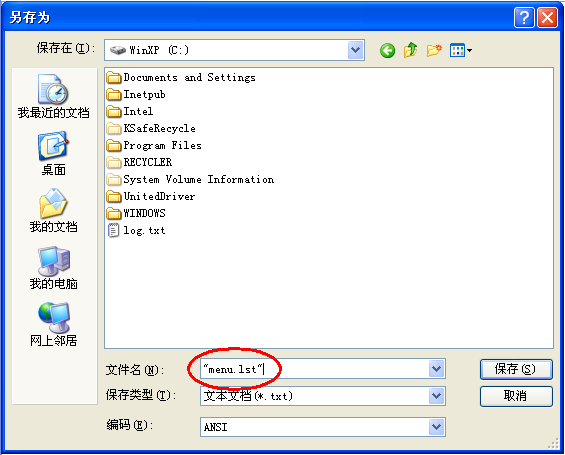
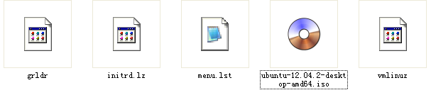
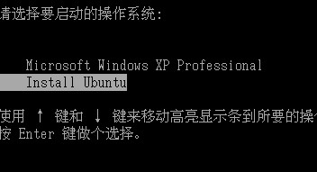
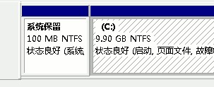
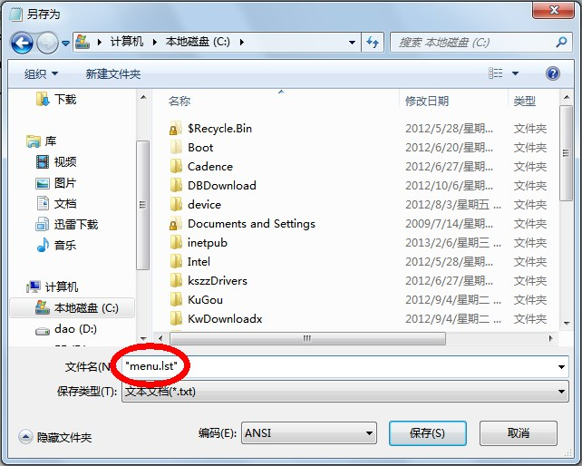
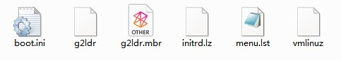

Ubuntu install
在WinXP上安装Ubuntu
1.复制引导文件
a.下载 Ubuntu 的 desktop 光盘镜像 iso 文件,如 Ubuntu 12.04.2 LTS 长期支持版本:ubuntu-12.04.2-desktop-amd64.iso
b.用 7-zip 或 WinRAR 将iso文件解压之
c.在 casper 文件夹里,有两个文件 initrd.lz 和 vmlinuz,这两个文件就是系统引导文件,将这两个文件复制到系统盘 C 盘根目录下
2、制作menu.lst文件
a.打开记事本,输入下面的内容,注意把第三行中 filename=/ 后面的文件名改成对应的
title Install Ubuntu
root (hd0,0)
kernel /vmlinuz boot=casper iso-scan/filename=/ubuntu-12.04.2-desktop-amd64.iso quiet splash ro locale=zh_CN.UTF-8 noprompt --
initrd /initrd.lz
点菜单“文件－保存”,位置保存在系统盘 C 盘根目录下,文件名输入 "menu.lst",注意有一对英文的双引号(如下图)

b.再下载一个grldr文件：http://code.google.com/p/grub4dos-chenall/downloads/list，提取其中的 grldr 文件(非grldr.mbr)
c.将iso文件也复制到系统盘 C 盘,至此系统盘 C 盘已经有以下5个文件

3.修改WinXP的启动文件boot.ini
a.WinXP的启动配置文件C:\BOOT.INI，打开这个文件，修改里面的timeout=0，把0改成3或者更大的数字，并在文件最后添加如下即可：
timeout=3
.
.
.
c:\grldr="Install Ubuntu"
b.重新启动计算机，在出现以下启动菜单时，按方向键选择“Install Ubuntu”，按回车键进入后开始安装；

c.耐心等待系统加载，直到出现桌面，打开终端Terminal并输入:
sudo umount -l /isodevice #硬盘安装系统时候需要运行此命令,是把已经挂载的iso文件卸载
#因为iso文件是存储在硬盘上的,只有卸载之后才能够给该硬盘重新分区
d.双击桌面上的“安装 Ubuntu”图标，稍等进入安装对话框开始安装
在Win7/8上安装Ubuntu
1.检查 Win7/8 保留分区
Win7/8如果有作引导用的100M的系统保留分区(如下图),需先将这100M的分区配一个盘符,将相关文件复制到这个系统保留分区尔后再将所配盘符取消

如果没有这个保留分区,则将相关文件复制到系统盘 C 盘
2.复制引导文件
a.下载 Ubuntu 的 desktop 光盘镜像 iso 文件,如 Ubuntu 12.04.2 LTS 长期支持版本:ubuntu-12.04.2-desktop-amd64.iso
b.用 7-zip 或 WinRAR 将iso文件解压之
c.在 casper 文件夹里,有两个文件 initrd.lz 和 vmlinuz,这两个文件就是系统引导文件,将这两个文件复制到系统保留分区或是系统盘 C 盘根目录下
2、制作menu.lst文件
a.打开记事本,输入下面的内容:
title Ubuntu/Linux 12.10
find --set-root /boot/grub/i386-pc/core.img
kernel /boot/grub/i386-pc/core.img
boot
如果 /boot 是单独分区的，使用下面这样的：
title ubuntu/Linux (/boot on single partitionas)
find --set-root /grub/i386-pc/core.img
kernel /grub/i386-pc/core.img
boot
点菜单“文件－保存”,位置保存到系统保留分区或是系统盘 C 盘根目录下,文件名输入 "menu.lst",注意有一对英文的双引号(如下图)

b.再下载一个 g2ldr 和 g2ldr.mbr 文件，也复制到系统保留分区或是系统盘 C 盘根目录下
c.再在系统保留分区或是系统盘 C 盘根目录下创建一个 boot.ini 文件，输入下面的内容：
[boot loader]
timeout=0
default=C:\g2ldr.mbr
[operating systems]
C:\g2ldr.mbr="Ubuntu"
这样在系统保留分区磁盘里面就有6个复制过来的文件(如下图)，在系统盘 C 盘里有一个 Ubuntu 镜像文件

如果没有系统保留分区,则这7个文件都放在系统盘 C 盘里
至此,取消系统保留分区磁盘所配的盘符.
3.重新启动计算机，在出现启动菜单时，按方向键选择“Ubuntu”，按回车键进入后开始安装；
a.耐心等待系统加载，直到出现桌面，打开终端Terminal并输入:
sudo umount -l /isodevice #硬盘安装系统时候需要运行此命令,是把已经挂载的iso文件卸载
#因为iso文件是存储在硬盘上的,只有卸载之后才能够给该硬盘重新分区
b.双击桌面上的“安装 Ubuntu”图标，稍等进入安装对话框开始安装
Linux磁盘分区挂载：
/ # 根分区 EXT4 or XFS
swap # 交换分区 4G内存以下分2G，4G以上可不分
or
/ # 根分区 EXT4 or XFS
/home # 逻辑分区 这个分区是用来存放用户文件，像文档、图片、歌曲等等，容量别太小；
swap # 4G内存以下分2G，4G以上可不分
or
/ #根目录EXT4
/boot #引导程序 逻辑分区
swap #交换空间 跟内存相同或多一些 用于选“交换空间” ，“挂载点”省略，这个分区是用来休眠和虚拟内存用的；
/home #逻辑分区 这个分区是用来存放用户文件，像文档、图片、歌曲等等，容量别太小；
/tmp #逻辑分区
/usr #应用程序目录。大部分的软件都安装在这里。就像是Windows里面的Program Files。
/usr/local #存放用户自己安装的程序。
/opt #逻辑分区 在某些系统，用于存放第三方厂商开发的程序，所以取名为option，意为"选装"。
/var #逻辑分区 日志文件，经常会变动，硬盘读写率高的文件放在此中
/srv
Windows下VirtualBox虚拟Linux共享文件夹设置
1. 安装增强功能包(VBoxGuestAdditions)
打开VirtualBox，运行Linux，菜单栏/设备/安装增强功能
2. 设置共享文件夹
菜单栏/设备/Shared Folders Settings(共享文件夹) 选择共享的路径 D:\IT\VirtualDrive
3. 挂载共享文件夹 在终端下输入：
su
mkdir /mnt/share # share是可以任起一个文件名
mount -t vboxsf VirtualDrive /mnt/share
现在Linux和主机可以互传文件了 其中VirtualDrive是在Windows上创建的共享文件夹的名字
Linux下的/mnt/share文件夹和windows下的D:\IT\VirtualDrive文件夹在一定程度上就相当于同一个文件夹了（添加、修改、删除会同步发生）
不想每一次都手动挂载，可以在/etc/fstab中添加一项
VirtualDrive /mnt/share vboxsf rw,gid=100,uid=1000,auto 0 0
这样就能够自动挂载了。
4. 卸载的话使用下面的命令：
su
umount -f /mnt/share
注意：
共享文件夹的名称千万不要和挂载点的名称相同。
比如，上面的挂载点是/mnt/shared，如果共享文件夹的名字也是shared的话，在挂载的时候就会出现如下的错误信息
/sbin/mount.vboxsf: mounting failed with the error: Protocol error
Ubuntu 和 windows 双系统，怎样让系统默认为从 windows 启动？
如果直接把grub.cfg中的windows菜单项摆到最前面，update-grub又会复原.
修改 /etc/grub.d 下的文件名
/etc/grub.d目录下这几个文件名都是以数字开头，这确定了在 update-grub 时各文件内容被执行的顺序，
我们只要把 30_os-prober 这个文件名的 30 改为 05到10之间的数字即可（没多少可选 06 07 08 09 取个中间 08吧），
改为 08_os-prober 好了，再执行 update
mv 30_os-prober 08_os-prober # 30_os-prober 重命名为 08_os-prober
sudo update-grub
cat /boot/grub/grub.cfg
双系统保留 Windows 删除 Linux
删除 Linux 分区后输入：
bootrec.exe /fixmbr #这将删除 Linux 的bootloader和恢复Windows
双系统保留 Linux 删除 Windows
删除 Windows 分区后输入：
sudo update-grub #清除启动菜单中 Windows 系统痕迹
20140901